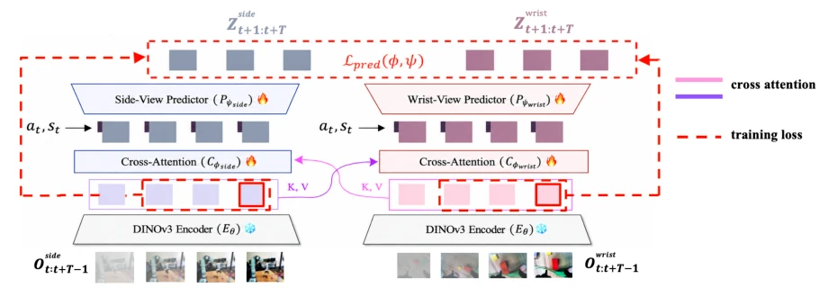
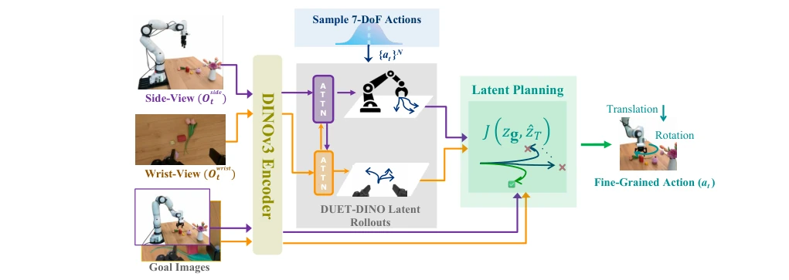
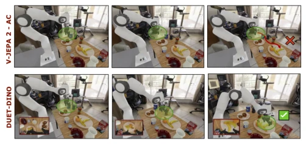
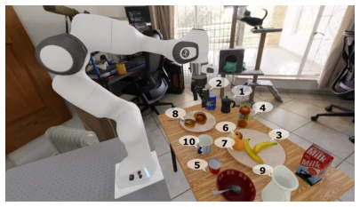
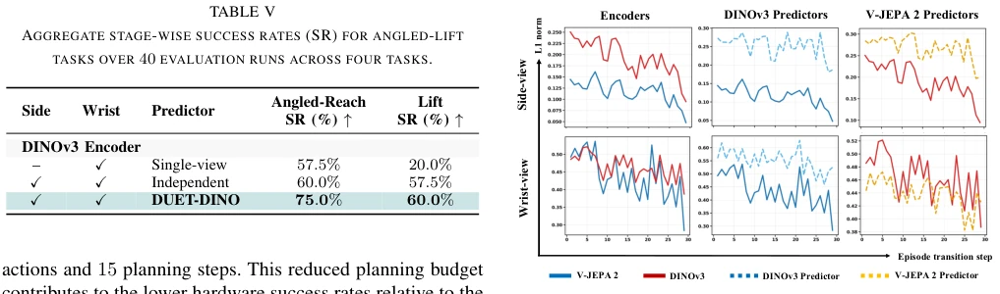
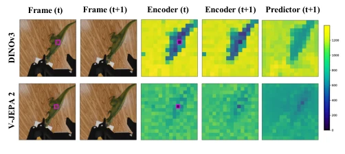

This paper performs a "dual-channel" surgery on monocular world models. DUET-DINO attempts to solve the 7-DoF control challenge using side-view and wrist-view dual cameras, as relying on a single eye indeed makes it difficult to see how the manipulator rotates, especially regarding rotation and gripper actions. The representation capability of DINOv3 is indeed stronger than V-JEPA 2, achieving full win rates on complex tasks, with the Reach task reaching 92%. However, CEM planning takes over ten seconds each time; this "real-time" capability is likely only suitable for slow-motion replays, and real machine deployment depends on whether the hardware is sufficiently powerful. Although the success rate is high, the computational cost is evident, making it still too "heavy" for real-time control. Overall, it is an impressive attempt at dual-view fusion, but there is still a distance from true real-time closed-loop control, representing a typical case of "accuracy for speed".
Existing latent space-based world models (such as V-JEPA 2 [2]) perform poorly when predicting fine-grained actions, especially 7-DoF control involving rotation and gripper states. Single-view models struggle to simultaneously capture global scene context and local geometric details of the end-effector, leading to planning failure [2], [7]. For instance, in tasks requiring precise angle adjustment, single-view predictions often underestimate visual dynamic changes, failing to support fine manipulation. To address this bottleneck, the authors propose simultaneously utilizing complementary information from side-view and wrist-view, enhancing prediction reliability through cross-view conditioning, thereby achieving more precise zero-shot target-conditioned planning and filling the gap in existing models regarding 7-DoF action space planning.
The overall process is divided into two stages: training and planning. During training, the DINOv3 encoder is frozen to map side-view and wrist-view images into latent features, allowing the two views to query complementary information from each other in the latent space via Cross-Attention blocks. Subsequently, independent prediction heads predict future latent states based on actions, with the loss function combining teacher forcing and autoregressive rollout. In the planning stage, the CEM algorithm is used to search for action sequences in the latent space, with the goal of minimizing the normalized dual-view distance between predicted latent states and target latent states. The key innovation lies in cross-view conditioning, enabling each predictor to retain its own view dynamics while utilizing information from the other view to correct prediction bias, ultimately achieving joint optimization of the 7-DoF action space. Additionally, the model is trained from scratch on the DROID and RoboArena datasets, ensuring generalization capability across different scenarios and avoiding overfitting risks brought by single data distributions.

Fig. 2. Architecture and training of DUET-DINO. The pretrained encoder maps side- and wrist-view observations into latent space. Cross-attention blocks condition each view on complementary information from the other view in the latent space. The view-specific predictor heads then predict future latents conditioned on the action and end-effector state. The dual-view prediction loss Lpred(ϕ, ψ) combines the teacher-forcing loss computed over all one-step predictions in the clip with an autoregressive loss over the K-step rollout predictions.

Fig. 3. Overview of the proposed simultaneous cross-view world modeling method, showing predicted dual-view latent rollouts, CEM action planning using predicted and goal latents, and the normalized dual-view planning cost J(zg, ˆzT ).
Trained on the DROID and RoboArena datasets, covering Reach, Angled Reach, and Lift tasks. Comparison baselines include single-view, independent dual-view, and V-JEPA 2-AC [2]. DUET-DINO achieves a 92% success rate on the Reach task, 72.5% on Angled Reach, and 60% on Lift, significantly outperforming the baselines. Ablation studies show that removing cross-attention leads to a significant performance drop, confirming the importance of cross-view information fusion. Additionally, the DINOv3 encoder outperforms V-JEPA 2 in capturing fine-grained action changes. Although simulation performance is excellent, hardware testing sees success rate drop due to CEM latency, but robustness remains stronger than single-view models.

Fig. 1. Comparison of goal-conditioned 7-DoF action planning toward the target object (banana) between our proposed DUET-DINO world model and V-JEPA 2-AC. DUET-DINO progressively moves the end-effector toward the goal, while V-JEPA 2-AC fails to approach the target.

Fig. 4. Static right side-camera view showing the robot in its home pose and the target objects used in the reach tasks: (1) Coffee Pot, (2) Coffee Can, (3) Banana, (4) Juice Carton, (5) Yogurt Cup, (6) Apple, (7) Orange, (8) Bagel, (9) White Pitcher, and (10) Ceramic Mug.

Fig. 5. Mean latent changes captured by frozen encoders, DINOv3 action- conditioned predictors, and V-JEPA 2 action-conditioned predictors over 30 runs of an angled-reach task.

Fig. 6. Patch-wise latent distances for DINOv3 and V-JEPA 2 feature maps. Lower ℓ1 distances indicate greater similarity to the selected reference patch. Frames at t and t + 1 are shown after resizing to the respective encoder inputs. Feature maps are visualized at 14 × 14 for DINOv3 and 16 × 16 for V-JEPA 2. DINOv3 produces 196 patches of 1280 dimensions, whereas V-JEPA 2 produces 256 patches of 1408 dimensions.